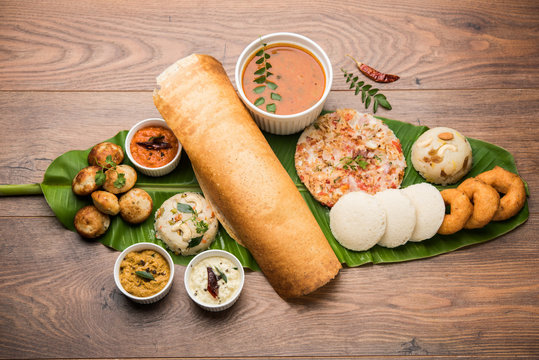

SOUTH INDIAN CUISINE!!!
South Indian cuisine encompasses the food of the five southern Indian states (Tamil Nadu, Andhra Pradesh, Karnataka,
Kerala, and Telangana) and is known for being rice-based. It features a variety of popular dishes like dosas, idlis, and
vadas, often served with accompaniments like sambar and various chutneys. Common meal structures include rice with side
dishes for lunch and lighter options like dosas or appam for dinner.
